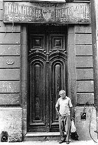
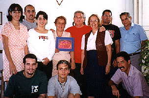
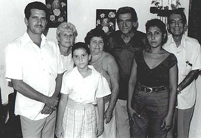

SYNAGOGUES
AND CONGREGATIONS
Click on a city on the map, or on a link below, to go to
a description of a Jewish community in Cuba
Map
used in compliance with Mapquest's Terms of Use policy.
All requests to visit the
Jewish community in Cuba should be addressed to:
Adela Dworin
Vice President of Casa de la Comunidad Hebrea de Cuba
El Patronato
Calle I, #259,
Esquina 13
Vedado, Ciudad de la Habana 10400
Cuba
Phone: (537) 832-8953
Fax: (537) 33 3778
E-mail: beth_shalom@enet.cu
or
patronato_ort@enet.cu
|
 Adela
Dworin, Vice President of
Adela
Dworin, Vice President of
Casa de la Comunidad Hebrea de Cuba |
Addresses
and Phone Numbers
(53 is the Cuba long distance
code; 7 is the Havana code.)
Havana
|
|
El Patronato - la Casa de la
Comunidad Hebrea de Cuba
(Conservative)
Synagoga Beth Shalom (Conservative)
Calle I Esq. 13, Vedado, Ciudad de la Habana, CP 10400, Cuba.
Tel: (537) 832 8953, Fax: (537) 33 3778
Email: beth_shalom@enet.cu, patronato_ort@enet.cu
Adela Dworin, president
Cuban
Jewish Community official web site:
www.chcuba.org
|
 Jose Levy Tur of Havana's Sephardic
congregation.
Jose Levy Tur of Havana's Sephardic
congregation.
Mindy Shapiro photo. |
Centro Sefaradi (Conservative)
President Dra. Mayra Levy
Vice President Dra. Esther
Jequin
.
Calle 17 esquina Calle E,
Vedado, La Habana 10400
Tel: (53) (7) 832-6623
E-mail:
sefaradi@enet.cu Link
to article on Centro Sefaradi
Also located here:
Mitrani Senior Day
Care Center
Holocaust Museum
|
Chevet Achim
(built in 1914,
oldest synagogue in Cuba)
Inquisidor entre Luz y Santa Clara
Habana Vieja
La Habana 10100
Phone: 53 (7) 8 32-6623
(This building, owned and maintained by Centro
Sefardi, is closed and not used for ritual or community purposes.
It may be viewed by appointment. Contact Jose Levy Tur - address
and phone above.)
|

Paul Margolis photo
|

Mindy Shapiro photo |
Adath Israel (Orthodox)
Picota 52 esquina Acosta,
Habana Vieja, La Habana 10100
Phone: 53 (7) 861-3495
E-mail: adath@ip.etecsa.cu
Services
at Adath Israel
Dan Heller provides a photo essay
and historical material on Cuba's Jewish communities.
(Opens new browser window.)
|
Santiago de Cuba
Communidad Hebrea Hatikva
(Conservative)
President Elias Vilat
Corona 273, e/Habana y Los Maceo,
Santiago de Cuba, 90100
Tel: (53) (22) 686180 or (53) (22)-624913,
elias.vila@infomed.sld.cu
hatikva@enet.cu
|
|
Reina looks at the future temple
- the old one is occupied. Fred Weiner photo.
|
|
Santa Clara
Comunidad Tikun Olam
Santa Clara, Villa Clara
President David Tacher Romano
tacher_2013@yahoo.es
(011) 53 563156 mobile
(1)53-0422742804
Facebook-DAVID TACHER ROMANO
|

June Safran photo
(Click on the photo for a larger view)
|
|
|
Cienfuegos
Calle 39 #5001 e/ 50 y 52
phone:432-51-5995
Rebeca Langus, President
|
Guantanamo
Rodolfo Mizrachi,
President
Paseo Este #2211
e/ 4 y 5
|

The Esquenazi-Mizrahi clan makes
up the bulk of the Jewish community of Guantanamo. They have
returned to Judaism in recent years. Paul Margolis photo
|
|
(Looking for
a photo and an address)
|
Caibarien
Bertha Sara Levy, President
0423-3544
Julio Rodrigues Eli, vice-president
Avenida 15 #1626 e/ 16 y 18
Caibarien, Villa Clara
|
|
Campechuela
Marti #4, Indep #72
Enrique and Leon Balia
023-587-548
|
June Safran photo
(Click on the photo for a larger
view)
|
|
Sancti Spiritus
Jose and Elisa Barlia
Brigadier Reeve No. 2
Ave. de los Martires y
Isabel Ma de Valdiva
Sancti Spiritus
Tel : 2-5210
|
Gil
Epshtein photo
|
|
Manzanillo
Elena Perez Behar, President
Villenda #348 e/ Leon Y Astillero
Manzanillo, Granma
(023) 53586, (023) 53532
|
Our thanks to Moises
Asis, June
Safran, and Gil
Epshtein for the information on this page.
|